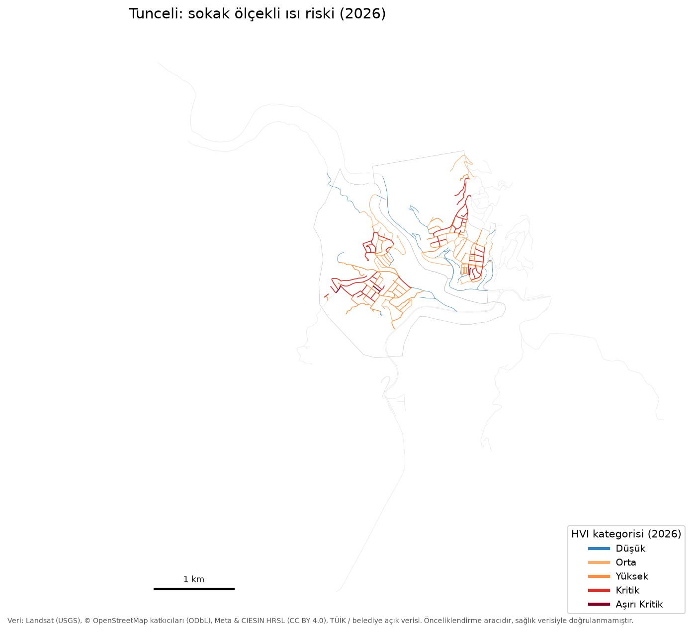
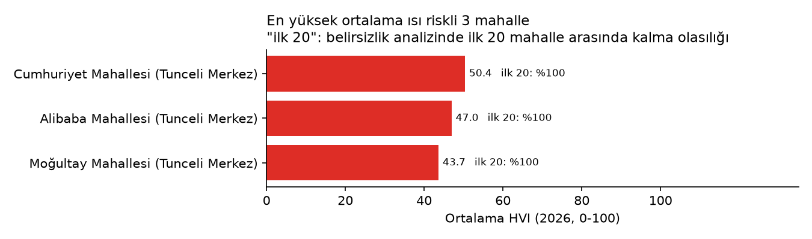
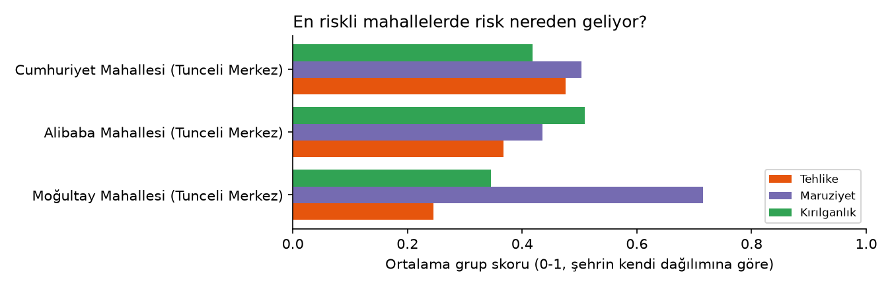
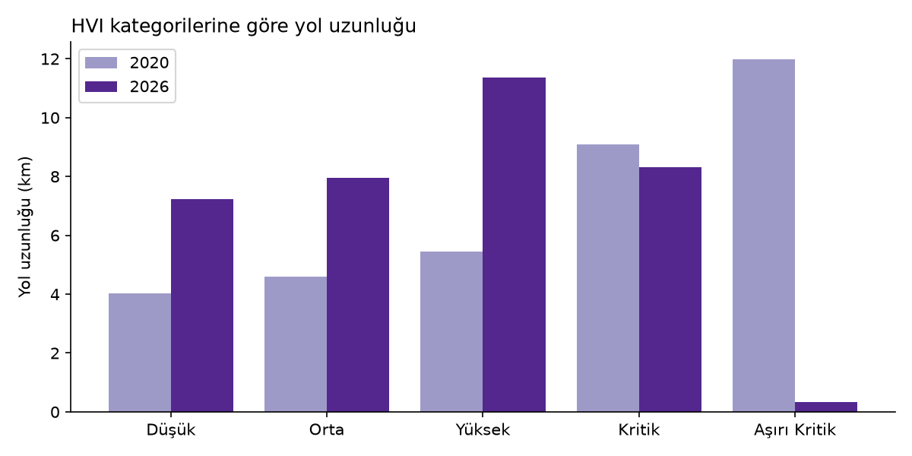

Isı Hassasiyet Endeksi (HVI) özeti, 2020, 2026. Canlı harita: https://ayberkrk.github.io/turkiye-heat-risk/tunceli/
Bu endeks bir önceliklendirme aracıdır: sağlık verisiyle (acil başvuru, ölüm) doğrulanmamıştır. Bir yolun ya da mahallenin ötekinden kaç kat daha tehlikeli olduğunu değil, sıcak havada nereye önce bakılması gerektiğini gösterir. Skorlar şehrin kendi dağılımına göredir; iki şehrin aynı kategorisi aynı mutlak riski ifade etmez.
Her yol segmentine 0-100 arası bir puan verilir. Puan üç sorunun cevabını birleştirir: burası sıcak mı (uydudan ölçülen yaz yüzey sıcaklığı), burada çok insan var mı (nüfus ve bina yoğunluğu), buradaki insanlar kırılgan mı (yaşlı ve çocuk oranı, ilçenin gelişmişliği, ağaç azlığı, sağlık tesisine ve parka uzaklık). Üç grup birbirini telafi edemez: sıcak olmayan ya da kimsenin yaşamadığı bir yolda risk düşük kalır.
| Şehir | Tunceli |
|---|---|
| Yıllar | 2020, 2026 |
| Skorlanan yol segmenti | 180 |
| Toplam yol uzunluğu (km) | 35 |
| Ortalama yol yüzey sıcaklığı 2020 (°C) | 47.3 |
| Ortalama yol yüzey sıcaklığı 2026 (°C) | 44.5 |
| Kategori dağılımı 2020 | Düşük: 11, Orta: 16, Yüksek: 29, Kritik: 51, Aşırı Kritik: 73 |
| Kategori dağılımı 2026 | Düşük: 27, Orta: 39, Yüksek: 64, Kritik: 47, Aşırı Kritik: 3 |
| En yüksek ortalama HVI'li 5 mahalle | Cumhuriyet Mahallesi (Tunceli Merkez) %50.4; Alibaba Mahallesi (Tunceli Merkez) %47.0; Moğultay Mahallesi (Tunceli Merkez) %43.7 |
| Belirsizlik: varsayılan ilk %10'un kararlı payı | %0 (koşuların en az %90'ında yine ilk %10'da) |
| Belirsizlik: Spearman medyanı (varsayılana göre) | 0.865 |
| HVI formül sürümü | 7 |
| Nüfus ızgarası | https://dataforgood-fb-data.s3.amazonaws.com/hrsl-cogs/hrsl_general/hrsl_general-v1.5.69.vrt |
| Üretim tarihi (UTC) | 2026-11-06 21:55 |
| Canlı harita | https://ayberkrk.github.io/turkiye-heat-risk/tunceli/ |
| Sıra | Mahalle | İlçe | Ortalama HVI | Kritik + Aşırı Kritik yol payı | İlk 20'de kalma olasılığı |
|---|---|---|---|---|---|
| 1 | Cumhuriyet Mahallesi | Tunceli Merkez | 50.4 | 29% | 100% |
| 2 | Alibaba Mahallesi | Tunceli Merkez | 47.0 | 34% | 100% |
| 3 | Moğultay Mahallesi | Tunceli Merkez | 43.7 | 20% | 100% |
Yalnızca en az 20 yol segmenti olan mahalleler. Tam liste Excel dosyasının "Mahalleler" sayfasında.




| Veri | Kaynak | Lisans |
|---|---|---|
| Yüzey sıcaklığı ve NDVI | Landsat 8/9 Collection 2 Level-2, USGS; Microsoft Planetary Computer üzerinden | Kamu malı (USGS) |
| Yol ağı, bina, sağlık tesisi, yeşil alan | © OpenStreetMap katkıcıları | ODbL 1.0 |
| Nüfus ızgarası | Meta & CIESIN, High Resolution Settlement Layer | CC BY 4.0 |
| Mahalle/ilçe nüfusu ve yaş yapısı | Şehre göre: belediye açık veri portalı ya da TÜİK ADNKS | Kaynağın kullanım koşulları |
| Sosyoekonomik gelişmişlik | T.C. Sanayi ve Teknoloji Bakanlığı, İlçelerin SEGE-2022 araştırması | Kamuya açık resmi rapor |
| Gece yüzey sıcaklığı (isteğe bağlı) | MODIS MOD11A2/MYD11A2, NASA LP DAAC | Kamu malı (NASA) |
| Bu paket | turkiye-heat-risk, https://github.com/Ayberkrk/turkiye-heat-risk | ODbL 1.0 (OSM türevi veritabanı); kod MIT |
Korkmaz, A. (2026). Türkiye Kentsel Isı Riski Analiz Hattı (sürüm 2.1.0). Tunceli veri paketi. https://github.com/Ayberkrk/turkiye-heat-risk
Yöntem, sınırlamalar ve kod: https://github.com/Ayberkrk/turkiye-heat-risk